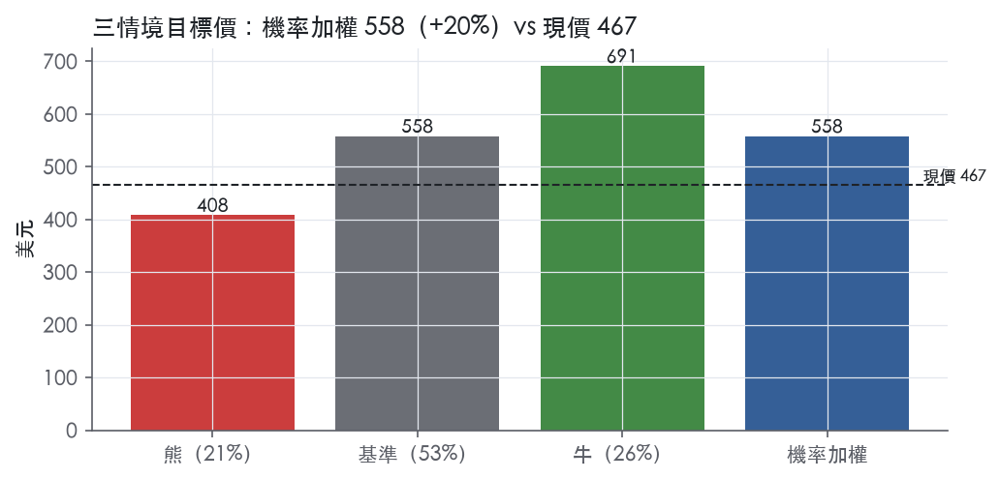
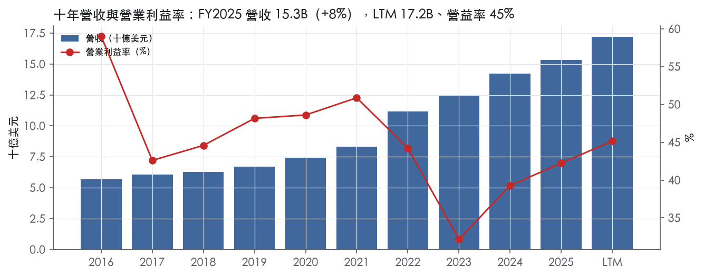
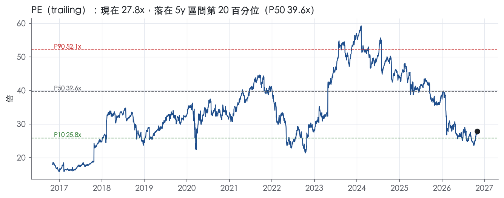
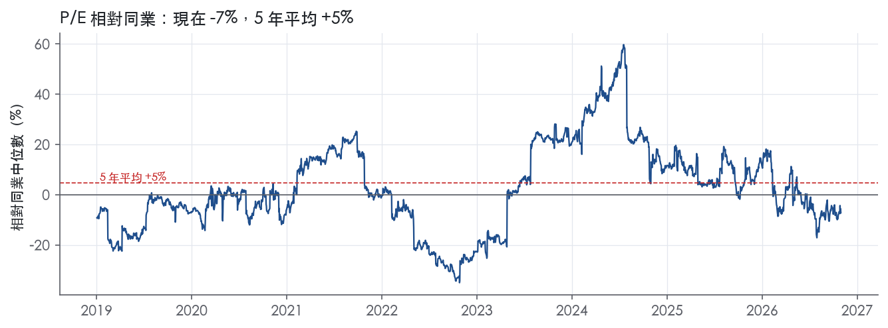
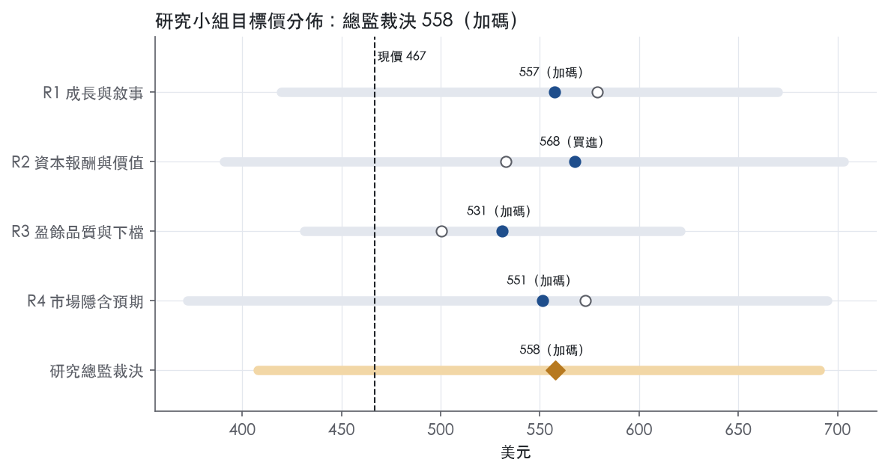
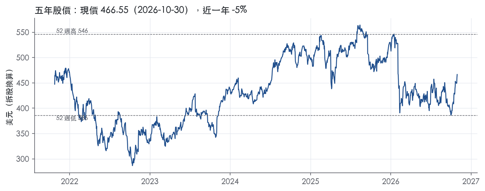

評等總表 › 金融 › SPGI
基期修正後同業折價收斂，看多｜評等 加碼｜目標價 558
| 報告日 | 評等 | 目標價 | 當時股價 | 超額報酬 |
|---|---|---|---|---|
| 2026-10-30 | 加碼 | 558 | 467 | +14.9% |
| 評等 | 加碼（邊界，鄰近買進） |
| 12 個月目標價 | 558 美元 |
| 現價 | 466.55 美元（2026-10-30） |
| 預期報酬 | 股價 +19.5%＋股息 5.3%＝總報酬 +24.9%；同業籃門檻 10.0%，超額 +14.9% |
| 估值方法 | P/E 27.0x，套在第 5–8 季的EPS（也就是一年後的未來四季） |
| 三情境 | 熊 408／基準 558／牛 691 |
| 研究流程 | 四位研究員兩輪辯論＋研究總監裁決 |
| 資料來源 | SEC EDGAR XBRL、Tiingo、FRED（全免費） |
基期修正後同業折價收斂，看多（研究總監裁決，四位研究員兩輪辯論後）
評等 加碼（邊界，鄰近買進）｜12 個月目標價 558 美元（總監三情境機率加權 561 與研究員中位數 554 各半）｜現價 466.55（2026-10-30）
預期報酬：股價 +19.5%＋股息 5.3%＝總報酬 +24.9%。同業籃門檻 10.0%，超額 +14.9%，離買進的分界不到三個百分點，屬邊界評等（落在其他級距的機率約五成）。
估值方法：P/E 27.0x，套在第 5–8 季的EPS（也就是一年後的未來四季）。三情境：熊 408（21%）／基準 558（53%）／牛 691（26%）。
評等說明：研究總監自己的機率加權目標價 561 美元對應「買進」；與研究員第二輪中位數 554 美元各半後為 558 美元，落入「加碼」。兩者只差一級，請把這檔讀成「買進～加碼」，正文裡總監的立場文字以「買進」寫成。
什麼會讓研究總監改變看法：Capital IQ 低價出售或審查無果、FY2027 有機指引中點低於 6.5%、Ratings 分部連兩季年減，任一出現就退回 R3 的 25x 轉中性；分割有價格與時程且 2027 指引中點 ≥8%，則牛情境 31x 成為基準。
| 過去四季（實際，FY2026Q3） | 未來四季 | 第 5–8 季 | 第 9–12 季 | |
|---|---|---|---|---|
| 營收（B） | 17.2B | 15.6B | 16.7B | 17.8B |
| 營收成長 | 18.2% | -9.5% | 7.0% | 7.0% |
| 營業利益率 | 45.1% | 45.5% | 46.5% | 47.5% |
| EPS（美元） | 16.78 | 18.25 | 20.66 | 23.37 |
| EPS 成長 | 22.3% | 8.8% | 13.2% | 13.1% |
| 每股股息（美元） | 3.87 | 3.87 | 3.87 | 3.87 |
| P/E（現價） | 27.8x | 25.6x | 22.6x | 20.0x |
| 股息殖利率（現價） | 5.3% | 0.8% | 0.8% | 0.8% |
過去四季為申報數字；預測為研究總監的假設、程式計算。倍數與殖利率都用現價計算，用來看現價對應各期獲利的高低。
| 情境 | 機率（歷史） | 故事 | 未來四季營收成長 | 第 5–8 季營益率 | 倍數 | 目標價 | 股價漲跌 |
|---|---|---|---|---|---|---|---|
| 熊 | 21%（22%） | 風險表第 1 條本行下行路徑 Baa 2.30 使發債量萎縮、Ratings 年減，第 5 條訂閱成長跌破 5%，第 2 條審查拖延與分割費用壓 FCF 與回購；倍數依 R3 的 FY2018 先例守在 P10 不再下探 | -11.0% | 43.5% | 23.0x | 408 | -12.6% |
| 基準 | 53%（53%） | 延續營運有機成長 7%、GAAP 營益率每年約升 1pp、FCF 支撐股數年減 3%，相對同業折價收斂到平價 | -9.5% | 46.5% | 27.0x | 558 | 19.6% |
| 牛 | 26%（25%） | Capital IQ 以明確價格與時程分割、所得回購，剩餘 Ratings＋Indices 特許業務向 MCO 30.1x／MSCI 33.2x 靠攏；取本行上行路徑 | -9.5% | 48.0% | 31.0x | 691 | 48.1% |
目標價由程式依研究總監的驅動與倍數計算；機率由研究總監給定。括號內是歷史頻率：把這檔股票過去十年 12 個月報酬的波動形狀，置中在基準情境，結果落在各情境附近的比例。

四位研究員用不同方法各自估值，回應研究總監的質疑後交出第二輪，最後由總監逐點裁決。各研究員的主張見第七章，裁決理由見第八章，完整論證見《研究底稿》。
| 立場（一輪→二輪） | 加權目標價（一輪→二輪） | 評等（一輪→二輪） | 第二輪倍數 | 熊～牛目標價 | |
|---|---|---|---|---|---|
| R1 成長與敘事 | 看多→看多 | 579→557 | 買進→加碼 | 31.0x | 419～670 |
| R2 資本報酬與價值 | 中性→看多 | 533→568 | 加碼→買進 | 28.0x | 391～703 |
| R3 盈餘品質與下檔 | 中性→中性 | 500→531 | 中立→加碼 | 25.0x | 431～621 |
| R4 市場隱含預期 | 看多→看多 | 573→551 | 買進→加碼 | 27.0x | 372～695 |
| 研究總監裁決 | 看多 | 558 | 加碼 | 27.0x | 408～691 |
目標價由程式依各自的驅動與倍數計算；評等＝機率加權總報酬 − 同業籃門檻。
S&P Global 是一家靠基準指標、資料、分析與工作流程解決方案賺錢的全球資訊服務公司，客戶橫跨資本市場、能源與商品市場、以及（分割前的）汽車市場。公司自我定位為「a global, diversified, and highly differentiated provider of benchmarks, data, analytics and workflow solutions in the global capital, energy and commodity, and automotive markets」¹。資本市場客戶包括資產管理公司、投資銀行、商業銀行、保險公司、交易所、交易商與發行人；能源與商品市場客戶涵蓋生產商、消費者、交易商及能源、化學、航運、金屬、碳權與農業領域的中介機構¹。公司 1925 年 12 月在紐約州註冊成立¹。LTM（至 FY2026Q3）營收 17.21B 美元，GAAP 稀釋 EPS 16.78 美元，是一家營收數十億美元級、高毛利的資訊服務巨頭。
公司原本以五大事業群運作，2026 年 7 月完成 Mobility 分割後，現在聚焦四大核心分部：Market Intelligence、Ratings、Energy、Indices。截至 2025 年底 10-K 揭露的結構為「our operations consist of five businesses: S&P Global Market Intelligence…, S&P Global Ratings…, S&P Global Energy…, S&P Global Mobility…and S&P Dow Jones Indices」¹。2025 年 4 月 29 日公司董事會宣布將 Mobility 全面分割成立新上市公司，「expected to be completed mid-2026」¹；該分割已於 2026 年 7 月 1 日完成，新公司 Mobility Global（NYSE: MBGL）掛牌，Mobility 自 3Q26 起列為停業單位²。
Market Intelligence 下轄 Data, Analytics & Insights（含 Capital IQ 系列平台）、Enterprise Solutions（Wall Street Office、Enterprise Data Manager、iLevel 等金融科技產品）、Credit & Risk Solutions（轉售 Ratings 評等與風險分析）三條產品線，收入主要來自訂閱、經常性變動費用與非訂閱式顧問／會議服務¹。Ratings 是獨立信評機構，「has played a leading role for over 150 years」，在 25 個以上國家設有辦公室，收入分為交易型（新債發行、銀行貸款評等相關費用）與非交易型（監控費、客戶關係定價年費、Crisil 研究）¹。Energy 提供能源與商品市場的價格評估與基準，下轄 Energy & Resources Data & Insights、Price Assessments、Upstream Data & Insights、Advisory & Transactional Services 四條線，收入來自訂閱、銷售使用權皇稅（授權價格數據給交易所）與非訂閱收入¹。Indices 經營 S&P Dow Jones Indices 系列基準，收入來自投資工具的資產掛鈎費（ETF、基金）、交易所掛牌衍生品的使用權皇稅、指數授權費與數據訂閱費¹。各分部具體營收佔比與成長率「10-K 未揭露」，須查閱 Note 12 segment data，但 3Q26 新聞稿指出「increase was driven primarily by Indices and Market Intelligence, with additional growth in Energy and Ratings」²，顯示 Indices 與 Market Intelligence 是目前成長最快的兩個分部。
值得注意的新變化：2026 年 10 月 27 日公司宣布對 Capital IQ 及相關資料業務（屬於 Market Intelligence 內 Kensho Data & Platforms 的多數業務）啟動策略審查，「including potential separation」，但「expects to retain RatingsDirect, RatingsXpress, and Enterprise Solutions」²。若落實，Market Intelligence 的分部邊界將再度大幅改變，公司等於在一年內做了第二次組合清理。
公司透過第三方與自有雙軌通路服務全球客戶，「through both third-party and proprietary distribution channels」¹。人力分布反映其全球化佈局：截至 2025 年底約 44,500 名正職員工，其中亞洲約 26,200 人、美加約 11,050 人、歐洲中東非洲約 6,200 人、拉丁美洲約 1,050 人¹，亞洲員工佔比最高，顯示公司在後勤與分析人力上高度倚賴亞洲。Ratings 服務的核心客群是投資人、企業、政府、市政機構、商業與投資銀行、保險公司、資產管理公司及其他發行人¹；Market Intelligence 服務投資管理公司、投資銀行、私募股權、保險公司、商業銀行、企業、專業服務公司、政府機關與監理單位¹。地區與各分部營收佔比的細節「10-K 未揭露」於 Item 1，需查 Note 12。
過去四季營收持續加速成長、利潤率同步擴張。FY2025Q4 營收 5.22B 美元、年增 45.3%，營益率 38.4%；FY2026Q1 營收 4.17B 美元、年增 10.4%，營益率擴大至 48.0%。FY2026Q2 公司完成 Mobility 分割，GAAP 營收 4.146B 美元、年增 10%，GAAP 營業利潤成長 17% 至 1.812B 美元，淨利成長 14% 至 1.217B 美元，稀釋 EPS 成長 18% 至 4.12 美元³；排除 Mobility 的 pro forma 營收為 3.678B 美元、年增 11%，pro forma 稀釋 EPS 成長 26% 至 4.08 美元³。該季宣布全年回購規模目標上修至「more than $7 billion in 2026」³。
FY2026Q3（延續營運）營收 3.678B 美元、年增 7%，GAAP 淨利成長 20% 至 1.298B 美元，GAAP 稀釋 EPS 成長 26% 至 4.45 美元，調整後稀釋 EPS 成長 9% 至 4.58 美元²。該季營業利潤率年增 800 個基點至 53.2%，調整後營業利潤率年增 60 個基點至 53.5%，GAAP 端受惠於 Energy 一筆處分收益²；公司單季回購 2.6B 美元股票，年初至今已回購逾 4B 美元，全年回購目標維持「more than $7 billion」²。公司同時將 2026 全年營收成長指引上修至 7.4%–8.4%（有機固定匯率成長 7.5%–8.5%），並上修調整後稀釋 EPS 指引至 17.70–17.95 美元，主因「higher expected revenue from the Ratings and Indices divisions」²。
公司管理層將近期成長歸因於評等、股票與商品市場對其基準與智慧財產的需求上升，CEO Martina Cheung 表示「Increasing demand for our benchmarks and unique intellectual property demonstrates our leadership in credit, equity, and commodities markets」²，並強調「Our focus on new high-growth adjacencies and our innovation are resonating deeply with customers around the world」²。公司在上一季也提到「continued rapid adoption and expansion of our AI solutions」以及分割後「a sharper focus on our four core divisions」帶來的組織效率³。對於啟動中的 Capital IQ 策略審查，公司定調為「our long-standing commitment to be good stewards of our portfolio, while prioritizing our investments where we're strongest」，並認為「separate ownership could provide dedicated investment and focus, positioning these businesses to accelerate innovation and growth」²。10-K 層面則強調 Ratings「well-positioned to capitalize on opportunities, driven by continuing regulatory changes, through its global network, well-established position in corporate markets and strong investor reputation」¹。
整體看，S&P Global 近兩年策略主軸是「瘦身聚焦」：先切 Mobility，現在評估再切 Capital IQ，把資本與管理頻寬集中在 Ratings 與 Indices 這兩個規模經濟與定價權最強的業務上。這個策略短期內確實反映在數字上——Ratings、Indices 帶動 3Q26 營收與利潤率雙升，但代價是業務邊界持續變動，增加財報可比性與投資人建模的複雜度。若 Capital IQ 分割成真，Market Intelligence 將大幅縮水，屆時公司核心引擎會進一步集中在信評與指數兩大高毛利特許業務上。

S&P Global 護城河評為「寬」，趨勢「穩定」；核心依據是 Ratings、Indices、Energy 三個業務都是市場運作離不開的基準，這種地位有把握撐住 10 年以上 ROIC 高於資本成本。帳面 ROIC 在 IHS Markit 合併後一度跌到資本成本附近，這是評級最大的反證，下文照實處理。
無形資產（品牌、監理認可的聲譽）是第一道牆。Ratings 自述「has played a leading role for over 150 years in providing investors with information and independent benchmarks」¹。公司把自己定位為「an important part of the world's financial infrastructure」，並強調其「strong investor reputation」¹。信評的價值在於投資人信任，這種信任要靠長期違約紀錄累積，新進者無法用資本買到。Indices 的收入建立在「S&P Dow Jones Indices' benchmarks」的品牌上，ETF 與共同基金依這些基準按資產規模付費¹。
網路效應讓基準愈用愈難被取代。Indices 從「trading volumes of derivatives contracts listed on various exchanges」收取使用權費¹。Energy 則「licensing our proprietary market price data and price assessments to commodity exchanges」¹。追蹤資金、衍生品流動性與合約結算價都錨定同一個基準；用的人愈多，基準就愈有代表性，競爭者愈難另起爐灶。信評同理：投資人認這家的評等，發行人就得找這家評。
轉換成本鎖住 Market Intelligence 與 Ratings 的經常性收入。Enterprise Solutions 提供 Wall Street Office、Enterprise Data Manager、iLevel 等工作流程軟體，用途是幫客戶「meet global regulatory requirements」¹。訂閱收入涵蓋「maintenance and continuous access to our platforms over the contract term」¹。這類系統嵌入客戶的估值、風控與合規流程，換掉的成本遠高於年費本身。Ratings 的非交易收入包括「fees for surveillance of a credit rating」與「annual fees for customer relationship-based pricing programs」¹。存續債券在整個存續期都需要監控評等，這部分收入有黏著度。
成本優勢與效率規模在 Item 1 原文中找不到直接證據，因此不列入。
利潤率面支持寬護城河；ROIC 面有明顯衝突，但衝突來自合併會計，不是競爭力下滑。
ROIC 的衝突要照實講。十年平均 599.9%、標準差 1460.9%，被 FY2021 的 4725.2% 嚴重扭曲，這個平均值沒有參考價值。合併前 FY2017–FY2020 的 ROIC 介於 104.1% 到 279.1%，反映原始特許業務的真實回報。FY2022 併入 IHS Markit 後，ROIC 依序為 16.2%、7.0%、10.0%、11.8%（–FY2025）；資本成本代理值為 10.0%（以 ust10y 4.98 加 5% 計）。換句話說，FY2023 低於資本成本，FY2024 與資本成本持平，FY2025 只是小幅站上。
即使有這個衝突，我們仍維持「寬」，理由有三：
估值研究員必須知道，股東層級的回報目前只是略高於資本成本；寬護城河指的是業務本身，不代表過去的併購價格划算。
最大風險不是對手搶客，而是監理、被動化費率壓縮與組合拆分。
護城河支持目標倍數相對資訊服務同業給予溢價：毛利率十年標準差僅 2.2%、資本支出極輕，基準與信評的網路效應可持續 10 年以上。溢價幅度應受合併後 ROIC 只略高於資本成本所限制，不宜回到 5y P50 的 EV/EBITDA 24.1x；現值 16.0x 落在 5y 分位 6.1%，代表市場已大幅折價這項風險。建議以「同業溢價、但低於自身歷史中位數」作為目標倍數的框架。
| 指標 | 最新 | 十年平均 | 標準差 | 最低 | 最高 |
|---|---|---|---|---|---|
| ROIC | 11.8% | 599.9% | 1460.9% | 7.0% | 4725.2% |
| 毛利率 | 70.2% | 70.0% | 2.2% | 66.4% | 73.7% |
| 營業利益率 | 42.2% | 45.2% | 6.8% | 32.2% | 59.0% |
| FCF 利潤率 | 35.6% | 34.3% | 7.5% | 22.5% | 46.9% |
| ROE | 13.9% | 184.2% | 169.2% | 7.4% | 473.5% |
程式計算。資本成本代理值（10 年債＋5%）：10.0%；ROIC 平均減資本成本：589.9%；ROIC 有資料的 9 年中，高於資本成本 8 年。
現金流覆蓋淨利在LTM、近三年、十年平均三個時間窗全部綠燈，應計比率長期為負，槓桿與利息保障寬裕，唯一的程式紅旗落在九年前且與當前盈餘品質無關。
CFO／淨利LTM 1.08x、近三年1.38x、十年平均1.21x，全部在綠燈區【判，量化底稿】。FCF／淨利LTM 1.05x、近三年1.34x、十年1.17x同樣綠燈【判，量化底稿】。應計比率LTM -0.8%、近三年-2.3%、十年-3.6%，負值代表盈餘不是靠應計堆出來、現金甚至比帳上淨利更保守【判，量化底稿】。拿申報數字對照：FY2025 CFO 5.65B、FCF 5.46B，對比淨利4.47B，現金覆蓋比淨利還高【判，數字出自資料包年度表】。LTM覆蓋比（1.08x）比近三年平均（1.38x）走弱，主因是FY2025下半年With Intelligence、AIS等併購付現與OSTTRA處分案遞延稅調整造成的季度波動，不是營運面惡化。唯一的灰色訊號是FY2025應收帳款成長快過營收成長5.0pp（黃燈），幅度遠低於15pp的紅燈門檻【判，量化底稿】。
10-K把FY2025營業利益的調整項目列得很細：處分利得273M、員工遣散費157M、處分相關成本92M、收購相關成本48M、法務成本48M、高管過渡成本（net）42M、租賃減損21M、法定勞動法應計調整9M、法律和解回收3M、資產註銷1M⁴。攤銷無形資產（併購產生）FY2025、FY2024、FY2023三年都約為1.1B美元⁴。3Q26新聞稿顯示GAAP稀釋EPS 4.45美元對比調整後EPS 4.58美元，GAAP淨利1.298B對比調整後淨利1.337B，公司明說本季最大的非核心調整項是處分利得與交易相關攤銷²。OSTTRA出售在FY2025認列稅前利得270M（稅後187M），現金收款1.5B（稅後1.4B）⁴，這是真正落袋的現金，但利得本身是一次性、不會重複出現，估值時該拿掉。遣散費在過去三年每年都出現、金額不同（FY2023為184M、FY2024為127M、FY2025為157M）⁴，公司當非核心排除，但年年發生更像常態重組成本而非真正一次性，這部分我不完全買單。2026全年guide攤銷約800M，GAAP EPS guide 16.25–16.50對比調整後17.70–17.95，差距主要就是這筆攤銷，是併購產生的真實會計費用、非現金支出，我傾向部分採信公司排除邏輯，但規模已大到持續壓低GAAP盈餘。
淨負債／EBITDA LTM 1.16x、近三年1.63x、十年平均0.75x三者皆綠，槓桿不是問題【判，量化底稿】。利息保障倍數LTM 24.0x、近三年17.8x、十年21.0x，付息能力非常寬裕【判，量化底稿】。過去三年公司回購約11.6B美元、配發普通股息約3.5B美元，合計約15.1B美元還給股東⁴。董事會已核准每股0.97美元的季度股息⁴。3Q26單季執行2.6B美元回購，年初至今已回購逾4B美元，全年預計回購超過7B美元²。（股利＋回購）／淨利LTM 155.4%、近三年140.8%已超過100%【判，量化底稿】，但淨負債／EBITDA仍在1.16x低檔、利息保障24x，代表這是靠現金流與低槓桿空間撐起的回饋，不是舉債發股利。稀釋股數年變動LTM為-1.3%、近三年-1.4%，是回購淨減少股數的結果，對EPS是加分而非稀釋【判，量化底稿】。
程式唯一標出的紅旗是FY2016→FY2017淨利率跳動-13個百分點【判，量化底稿】。用年度表推算，FY2016淨利率約37%（NI 2.11B／Rev 5.66B）、FY2017約25%（NI 1.50B／Rev 6.06B）【判，量化底稿年度表】。這個跳動落在2017年美國稅改生效的那一年，當年許多美國企業因遞延稅資產重估與視同匯回稅出現一次性稅務費用，這是市場公開認知的背景，但本次拿到的10-K Item 7節錄只涵蓋FY2023–FY2025，沒有FY2017當年的原文可直接佐證。在沒有原文佐證的情況下，我把這條紅旗定性為「年代久遠、與現在盈餘品質無關」的候選假警報，但不100%排除，因為沒看到FY2017那年的10-K原文字句。更重要的是，這條紅旗距今九年，近十年、近三年、LTM三個時間窗的現金轉換、應計、槓桿、稀釋股數指標全部是綠燈，沒有任何現在發生的紅旗。第二項要回應的是黃燈：FY2025應收帳款成長快過營收成長5.0pp【判，量化底稿】。10-K在營收敘述中提到Ratings的surveillance revenue、Crisil子公司營收、corporate bond ratings revenue成長，以及Market Intelligence的訂閱營收成長⁴，業務組合轉向更多surveillance／訂閱型合約，認列時點與回收週期不同，可能是機械性落差而非收款惡化，且同期CFO／淨利與FCF／淨利仍是綠燈，沒有看到營運資金真的在侵蝕現金，判定這條黃燈為可解釋、非真問題。
估值可以以GAAP淨利／EPS為主要基準，不需要大幅打折，因為現金轉換全綠、應計比率為負、沒有未解釋的真紅旗。但併購攤銷規模約1.1B美元一年、2026guide交易相關攤銷約800M，GAAP與調整後EPS的缺口（如3Q26的4.45對4.58美元）會持續存在，若用調整後EPS要清楚知道扣掉的是真實、重複發生的攤銷而非空氣項目。處分利得（OSTTRA、Fincentric等）屬一次性非核心項目，估值用EV/EBITDA或正常化EPS時應剔除，不應把FY2025的273M處分利得當作可持續盈餘能力。槓桿低（淨負債／EBITDA 1.16x）、利息保障高（24x），不構成限制估值倍數的理由，目前trailing P/E 27.8x落在5年分位19.5%、EV/EBITDA 16.0x落在5年分位6.1%，相對自身歷史偏低而非偏貴，盈餘品質支持不需在此基礎上再打折【判，資料包倍數帶】。
| 項目 | LTM | 近三年 | 十年 | 燈號 | 規則 |
|---|---|---|---|---|---|
| 營業現金流／淨利 | 1.08x | 1.38x | 1.21x | 綠 | ≥1.00x 綠、<0.80x 紅 |
| 自由現金流／淨利 | 1.05x | 1.34x | 1.17x | 綠 | ≥0.90x 綠、<0.60x 紅 |
| 應計比率（(淨利−CFO)／平均總資產） | -0.8% | -2.3% | -3.6% | 綠 | ≤0.0% 綠、>5.0% 紅 |
| SBC／營收 | 1.2% | 1.5% | 1.5% | 綠 | ≤3.0% 綠、>8.0% 紅 |
| 淨負債／EBITDA | 1.16x | 1.63x | 0.75x | 綠 | ≤1.50x 綠、>3.00x 紅 |
| 利息保障倍數（營業利益／利息） | 24.0x | 17.8x | 21.0x | 綠 | ≥8.00x 綠、<3.00x 紅 |
| 稀釋股數年變動 | -1.3% | -1.4% | 2.0% | 綠 | ≤0.0% 綠、>3.0% 紅 |
| （股利＋回購）／淨利 | 155.4% | 140.8% | 128.7% | 綠 | ≥50.0% 綠、<0.0% 紅 |
| 應收帳款成長 − 營收成長（FY2025） | +5.0pp | — | — | 黃 | ≤5pp 綠、>15pp 紅 |
程式計算；燈號以 LTM（無則近三年平均）判定。
| 風險 | 觸發指標（看什麼數字、在哪裡看） | 對 EPS 的影響方向與粗略幅度 | 未來 12 個月發生機率（高／中／低） | 出處 |
|---|---|---|---|---|
| 資本市場交易量/利率環境轉弱衝擊 Ratings 交易型收入 | 美國公司債/結構型發行量、ust10y／hy_oas（4.98、3.26）、每季 Ratings 分部營收年增率（8-K 分部揭露） | 負向、大：Ratings 與 Market Intelligence 部分收入「essentially dependent on the number and dollar volume of rated debt securities issued」⁵ | 中 | 10-K 年報 FY2025 Item 1A（風險因素） |
| Capital IQ／Kensho 策略審查導致 Market Intelligence 分割或重組 | 公司後續公告（8-K）、分割範圍是否擴大至 RatingsDirect/RatingsXpress 之外 | 方向不定、中：拆分可能稀釋合併報表 EPS 但提升剩餘業務利潤率；短期增加一次性費用 | 高（審查已啟動）² | 8-K 財報新聞稿（2026-10-27） |
| 信評業務增量監管（EU/UK ESG Ratings 新規、IOSCO/ESMA/FCA 審查） | FCA ESG ratings 監理生效日 2028-06；ESMA/FCA 新規公告日期 | 負向、中：「could result in reduced demand for credit ratings and/or significant increased costs」⁵ | 中 | 10-K 年報 FY2025 Item 1A（風險因素） |
| 網路攻擊/資料外洩造成客戶流失或訴訟 | 公司是否公告重大資安事件（8-K Item 1.05）、監管罰款公告 | 負向、方向明確但幅度不可估（公司未揭露具體金額）⁵ | 低 | 10-K 年報 FY2025 Item 1A（風險因素） |
| AI／免費資訊來源侵蝕訂閱需求 | 訂閱收入年增率（8-K「Revenue from subscription products increased 6%」為基準線）、Market Intelligence 分部續約率（10-K 未揭露，需後續財報追蹤） | 負向、方向明確，幅度「10-K 未揭露」不可量化⁵ | 中 | 10-K 年報 FY2025 Item 1A（風險因素） |
資本市場交易量風險：Ratings 的交易型收入「essentially dependent on the number and dollar volume of rated debt securities issued in the capital markets」，利率走高或信用利差擴大會直接壓縮發行量⁵。目前 hy_oas 僅 3.26、ust10y 4.98，處於相對寬鬆區間，但公司 3Q26 指引上修恰好是「driven by higher expected revenue from the Ratings and Indices divisions」²，代表目前的多頭情境已經部分計入股價與指引，一旦利差轉向，下修風險不對稱地大。這是五條裡機率中等但彈性最大的一條，應每季追蹤 Ratings 分部交易型收入年增率。
Capital IQ 策略審查：公司已在 2026-10-27 公告「initiated a strategic review of alternatives, including potential separation, for Capital IQ and associated data businesses, which constitute the majority of Kensho Data & Platforms within Market Intelligence」，且明確表示「expects to retain RatingsDirect, RatingsXpress, and Enterprise Solutions」²。這距 Mobility 分割（2026-07-01 完成）僅三個月，意味管理層正連續執行組合瘦身。公司自己承認「no specific timeframe」且「no assurance that the review will result in any transaction or particular outcome」²，但市場通常會提前為潛在分割定價，造成股價波動與可比性下降，這點不需要等結果發生就會影響倍數。
信評業務增量監管：10-K 列出多重監管身分——美國 Dodd-Frank、EU/UK 信評法規，以及正在推進中的 ESG ratings 專項監理，EU 已於 2024 年 11 月通過「regulation on the transparency and integrity of ESG rating activities」，英國 FCA 將「supervise ESG ratings providers from June 2028」⁵。公司明言此類規則「could result in reduced demand for credit ratings and/or significant increased costs, which we may be unable to pass through to customers」⁵。由於生效日已排定（2028-06），這是少數有明確時間表可監測的監管風險，但衝擊發生在 12 個月窗口之外的機率更高，故列為中等。
網路攻擊與資料外洩：公司明確承認「we have not experienced a cyber attack or data breach that has had a material adverse effect on us to date, we may experience such an event in the future」⁵，且業務核心涉及客戶的 material non-public information，一旦外洩「could cause our customers to lose faith in our ability to protect confidential information and therefore cause customers to cease doing business with us」⁵。這條無法用財報數字提前預警，只能靠是否出現重大資安揭露公告（8-K Item 1.05）作觸發指標，機率列低是因為公司過去未發生重大事件，但尾部風險不可忽視。
免費資訊來源與 AI 替代：公司自認「the continued growth of publicly available free or relatively inexpensive information could materially reduce demand for our products and services」，且競爭者「deploying AI in ways that make collection and processing of information relatively inexpensive or free」⁵。這是結構性、慢變量的風險，用訂閱收入成長率（基準：3Q26「subscription products increased 6%」²）作為監測指標，若此增速持續低於整體營收成長，即是警訊。
分割/重組的執行與一次性費用疊加對 FCF 的拖累：Mobility 分割已產生「significant expenses in connection with the separation」⁵，若 Capital IQ 分割接續啟動，兩筆分割費用疊加可能在 2027 年持續侵蝕自由現金流與回購能力，而公司目前回購指引「more than $7 billion in 2026」²是建立在延續營運現金流基礎上，這個疊加效應 10-K 未單獨量化。
股數大幅回購下的 EPS 敏感度被低估：3Q26 GAAP EPS 成長 26% 中，淨利僅成長 20%，其餘來自「4% decrease in diluted shares outstanding」²，顯示近期 EPS 成長有相當比例依賴高強度回購而非營運槓桿；若未來因分割分心或現金流轉弱而放緩回購速度，EPS 成長率的下修幅度會比市場直覺預期更大。
現價 466.55 對應 trailing（過去四季）P/E 27.8x、EV/EBITDA 15.9x、EV/EBITA 16.2x、EV/Sales 8.5x、FCF 殖利率 3.9%。主要估值倍數 P/E 現在 27.8x，落在5 年區間第 20 百分位（P10／P50／P90 = 25.8x／39.6x／52.1x）。

把程式的機械基準預測放到現價下，市場付的前瞻倍數是：P/E（未來四季） 19.8x、P/E（第 5–8 季） 17.2x。反推 DCF 顯示市價隱含未來五年營收年成長 5.6%（WACC 9.0%、終值成長 3.0%、FCF 利潤率 42.5%，SBC 不加回）。
| 倍數 | 現在 | 5 年 P10 | 5 年 P50 | 5 年 P90 | 現在分位 | 全期 P50 |
|---|---|---|---|---|---|---|
| P/E | 27.8x | 25.8x | 39.6x | 52.1x | 19.5% | 32.7x |
| EV/EBITDA | 16.0x | 16.8x | 24.1x | 28.4x | 6.1% | 21.8x |
| EV/EBITA | 16.3x | 17.1x | 24.4x | 29.0x | 6.1% | 22.3x |
| EV/EBIT | 18.9x | 19.6x | 28.3x | 36.4x | 5.3% | 22.8x |
| EV/Sales | 8.5x | 8.5x | 11.6x | 12.8x | 10.1% | 11.0x |
| P/S | 7.9x | 7.8x | 10.9x | 12.2x | 11.0% | 10.4x |
| P/FCF | 25.9x | 23.5x | 31.4x | 44.5x | 16.3% | 28.6x |
trailing 倍數（股價 ÷ 過去四季）；分位以每個交易日計算。
同業籃：MCO, MSCI, ICE, FDS, VRSK（手動名單（playbooks/peers.yaml））。評等門檻 10.0%：同業「倍數不變下持有一年」的隱含報酬中位數（＝ FCF 殖利率 ×(1＋g)＋g，g 為 5 年營收年複合成長並夾在 −2%～8%），每家夾在 0～15%、P/E 低於 5 倍視為資料可疑而排除，中位數再限制在 10 年債到 10 年債＋5% 之間（同業原始中位數 11.8%）。
| 代號 | 市值 | 5 年營收 CAGR | 營益率 | ROIC | P/E | 5 年 P/E 中位數 | EV/EBITDA | P/FCF | 隱含報酬 |
|---|---|---|---|---|---|---|---|---|---|
| SPGI | 135.3B | 15.6% | 45.1% | 11.8% | 27.8x | 39.6x | 15.9x | 25.7x | 12.2% |
| MCO | 85.2B | 7.5% | 44.6% | 31.7% | 30.1x | 40.3x | 21.8x | 28.6x | 11.3% |
| MSCI | 44.7B | 13.1% | 55.7% | 44.5% | 33.2x | 40.2x | 26.4x | 28.4x | 11.8% |
| ICE | 94.2B | 8.9% | 40.6% | 7.7% | 23.1x | 30.2x | 16.5x | 17.9x | 14.0% |
| FDS | 11.6B | 9.2% | 28.3% | 18.2% | 22.8x | 33.7x | 14.4x | 16.4x | 14.6% |
| VRSK | 25.7B | 6.2% | 44.0% | 36.3% | 29.9x | — | 18.2x | 22.8x | 10.9% |
| 同業中位數 | 8.9% | 44.0% | 31.7% | 29.9x | 36.9x | 18.2x | 22.8x | 10.0% |
全部 trailing，程式以各公司 SEC XBRL 與 Tiingo 行情計算；第一列為本檔。
P/E 相對同業中位數：現在 -7.1%，過去 1 年平均 0.1%、3 年 13.6%、5 年 4.7%；EV/EBITDA 相對同業中位數：現在 -14.4%，過去 1 年平均 -2.4%、3 年 -2.8%、5 年 -6.6%。

事後實現前瞻倍數帶（P/E，2018-11-19..2025-11-17）：P10／P50／P90 = 23.0x／33.2x／44.2x。它是每個交易日的股價除以之後四季實際實現的指標；一年後，今天的第 5–8 季正是那時的未來四季，所以這條帶是 12 個月目標價的同口徑倍數。因為用的是事後實際而非當時預期，過去成長超乎預期的公司這條帶會偏低。
程式的機械基準（成長率從過去四季年增率三年收斂到 6%、利潤率持平）用 事後實現前瞻 P/E P50 估值得到 899（92.6%），市場現行前瞻倍數（現價 ÷ 基準 未來四季指標）一年後持平，套在基準 第 5–8 季指標得到 538。這兩個數字只是參考點，不是本報告的目標價；研究員對這個定價的回應在第七章。
下表是每位研究員第一輪（各自獨立）與第二輪（回應研究總監的質疑後）的結果。目標價全由程式依各自的假設計算。
| 立場（一輪→二輪） | 加權目標價（一輪→二輪） | 評等（一輪→二輪） | 第二輪倍數 | 熊～牛目標價 | |
|---|---|---|---|---|---|
| R1 成長與敘事 | 看多→看多 | 579→557 | 買進→加碼 | 31.0x | 419～670 |
| R2 資本報酬與價值 | 中性→看多 | 533→568 | 加碼→買進 | 28.0x | 391～703 |
| R3 盈餘品質與下檔 | 中性→中性 | 500→531 | 中立→加碼 | 25.0x | 431～621 |
| R4 市場隱含預期 | 看多→看多 | 573→551 | 買進→加碼 | 27.0x | 372～695 |
| 研究總監裁決 | 看多 | 558 | 加碼 | 27.0x | 408～691 |
目標價由程式依各自的驅動與倍數計算；評等＝機率加權總報酬 − 同業籃門檻。
分歧度：第一輪 加權目標價 500～579（區間＝現價的 17%）· 倍數 25～31x · 立場 看多×2、中性×2；第二輪 加權目標價 531～568（區間＝現價的 8%）· 倍數 25～31x · 立場 看多×3、中性×1。

| 研究員 | 第二輪主張 | 堅持的理由 |
|---|---|---|
| R1 成長與敘事 | 看多，給未來四季 EPS 31 倍，即同業 29.9 倍加小幅溢價。 | 同業折價來自 Capital IQ 審查與口徑混亂，會自行釐清，31 倍不下調。 |
| R2 資本報酬與價值 | 看多，給 28 倍，相對同業回到 5 年平均溢價 4.7%。 | 熊情境給 22 倍，低於歷史下緣 23.0 倍，因資料業務可能被 AI 商品化。 |
| R3 盈餘品質與下檔 | 中性，給 25 倍，假設同業折價一年後不變。 | 分拆後公司更依賴 Ratings，受發債週期影響較大，不給更高倍數。 |
| R4 市場隱含預期 | 溫和看多，給 27 倍，同業折價 7.1% 收斂到平價。 | 熊情境機率 23%，高於歷史 20%，因利差擴大直接打擊 Ratings 收入。 |
每位研究員的逐條回應與完整論證見《研究底稿》（SPGI_研究底稿_2026-11-01.docx）。
| 分歧點 | R1 | R2 | R3 | R4 | 什麼資料會分出勝負 |
|---|---|---|---|---|---|
| 目標倍數 | 31x@ntm，同業 29.9x＋小溢價 | 28x@q5_q8，帶 P25、回 5 年均溢價 | 25x@q5_q8，P10–P25，分拆後更偏週期 | 27x@q5_q8，折價 −7.1% 收斂到平價 | 同業相對 P/E 逐季；Capital IQ 審查 8-K 的價格與時程；2027-02 指引 |
| 基期 y1 | −9.5%，四季口徑逐一列出 | −10.0%，同上 | −9.0%，缺口季未列 | −9.0%，缺口季「材料沒有」 | 2026-07-06 重編稿的 FY2025Q4／FY2026Q1 延續營運營收 |
| 成長 y2 | 7.5% | 7.0% | 6.5% | 7.0% | FY2027 有機指引中點；訂閱成長（基準 6%） |
| 營益率 y2 | 46.0% | 46.0% | 47.0%，錨 Q2 pro forma 47.8% | 46.5%，攤銷稀釋＋調整後擴張 | FY2026Q4 排除處分利得的 GAAP 營益率；2027 調整後擴張指引 |
| 熊情境重複計算 | 25x@ntm、股數 −1.5% | 22x＜P10、股數 −3% | 23x＝P10 套下修後 EPS、股數 −3% | 21x＜P10、股數 −2% | hy_oas 3.26 對本行下行 Baa 2.30；Ratings 分部年增；分割費用揭露 |
1. 倍數：裁 R4，27x eps@q5_q8。 四人點估很近（程式結果 R1 566、R2 569、R4 561、R3 523）；R1 與 R4 只差口徑，31x@ntm 等於一年後 trailing 回到同業 29.9x，依劇本統一用 q5_q8。真正分歧是折價收不收斂。R3 的 25x 依他自述只比現價隱含的同口徑倍數高一點（程式結果 522.81 對 466.55），即假設 −7.1% 折價一年後不動；但他給了四人最高的營益率，又用「更偏 Ratings 週期」壓倍數，方向矛盾，而第三季指引上修來自 Ratings 與 Indices²，審查切的又是護城河最窄的資料業務。R2 的 28x 要回 5 年均溢價 +4.7%，前提是分割有價格與時程，公司卻寫「no specific timeframe」，那是牛情境。R2、R4 anchor 裡「帶期間利率較低」依原則 7 不是個股理由，不採計；類股從 36.9x 去評價到 29.9x 一條就夠。檢查表「相對市場持平 +26%～+41%」是 19.8x 套在含 Mobility 基準 EPS 的假象。
2. 基期：裁 R1，−9.5%。 只有 R1、R2 逐季交代 LTM 17.21B哪三季含 Mobility，並把缺口季（FY2025Q4 5.22B、年增 45.3% 為倒推；FY2026Q1 4.17B）設在已觀察到的 3.678B 量級³；R3、R4 的 −9.0% 隱含缺口季更高卻無來源。兩者間取較不負的，因本部營收紀錄全員偏低（−0.4%～−0.7%）。2026-07-06 重編數字不在材料裡，出刊前補進資料包。
3. y2：裁 R4，7.0%（y3 7.0% 僅影響 Q9–Q12 與淨負債）。 R3 的 6.5% 把本行慢成長再扣一次，他在 Q1 回應已承認不能扣兩次；本行基準只是 GDP 1.8、Baa 1.49→1.75 的溫和轉弱，hy_oas 3.26，無公司特有降速觸發。R1 的 7.5% 把 2026 有機中點搬到 2028，與放慢前提不合，且其營業利益紀錄偏高 +2.6%。R4 營收紀錄絕對誤差 1.8%、偏誤 −0.4%，四人最佳之一。
4. 營益率：裁 R4，45.5／46.5／47.5%。 R4 是唯一把每年約 1pp 的 GAAP 擴張拆成兩個有來源機制：約 800M 固定攤銷隨營收稀釋 0.3–0.4pp，加上低於 2026 指引 75–100bp 的調整後擴張約 60bp²。R3 以 Q2 pro forma 47.8% 為錨，忽略 Q4 季節低谷（FY2025Q4 38.4%、FY2024Q4 36.4%）與年年的遣散費（財務體質章），y1 46% 沒留審查費用空間；R1、R2 每年只給 50bp，沒放攤銷稀釋。Q3 的 53.2%含處分利得，不作錨。我的營業利益紀錄偏高 +0.9%，y1 停在 45.5%。
5. 熊情境：R3 的邏輯、R4 的幅度。 R3 以 FY2018 先例（成長 3.2%、營益率 44.6% 反高於前年）證明深度下修與低於 P10 的倍數未曾同時發生，低於 P10 是把下修扣兩次；R2、R4 的 22x、21x 沒回應，R2 的熊還寫「無主要風險章」。但 R3 的熊 431高於 52 週低點 386.27，不算熊。R4 的驅動是唯一對應風險表第 1、5 條並寫出觸發指標的，股數 −2% 介於 R1 的 −1.5% 與 R3「低價多買回」的 −3% 之間。裁決：R4 驅動、倍數改 P10 23.0x。
漂移與總經偏離。 無須退回的漂移：R2 靠攏 87%，但六項變動逐一對應 V1–V6 並附證據，股數、稅率、資本支出三項反而壓低目標價，倍數 26→28 是撤回我在 V4 點出的 ROIC 沉沒成本理由的結果；R1、R3、R4 亦然。四人 macro_deviations 皆空，核對情境所用 2 年期、Baa、GDP 全出自本行前提表，無需接受或退回；敏感度可靠的只有 2 年期（t −2.7），本行 4.61→4.61 隱含 0%，與基準不衝突。
與機械基準不同的驅動：
目標倍數 27x GAAP EPS @ q5_q8：前瞻帶配 q5_q8，對事後實現前瞻帶 P10／P25／P50＝23.0／28.2／33.2x，落在 P25 略下。錨：一年後 trailing P/E 相對同業由 −7.1% 回到 1 年平均 0.1% 的平價；不回 5 年均 +4.7% 溢價，因審查無時程；不取自家 5y P50 39.6x（合併後偏低的 GAAP EPS 撐高）與 10y P50 32.7x（類股已從 36.9x 去評價到 29.9x）。利率不是理由。
| 情境 | 機率 | 來源 | 與基準不同的驅動 | 倍數 |
|---|---|---|---|---|
| 牛 | 26% | R4 原樣 | y2 9.5%、y3 9.0%；營益率 y2 48%、y3 49%；股數 −4.2% | 31x |
| 基準 | 53% | 總監 | — | 27x |
| 熊 | 21% | R4 驅動＋R3 倍數邏輯 | y1 −11%、y2 2%、y3 3%；營益率 44.5／43.5／43.5%；股數 −2.0% | 23x（P10） |
牛：Capital IQ 以明確價格與時程分割、所得回購，剩餘 Ratings＋Indices 向 MCO 30.1x／MSCI 33.2x 靠攏，取本行上行路徑。熊：風險表第 1 條（收入「essentially dependent」於發債量，本行下行 Baa 2.30 使 Ratings 年減）、第 5 條（訂閱由 6% 跌破 5%）、第 2 條（審查拖延、分割費用壓 FCF 與回購）；倍數守 P10，見裁決 5。
機率從歷史出發：置中分布 P10 −30%、P25 −12%、P75 +11%、P90 +21%；比中位數高 ≥10% 的頻率 27%，低 ≤10% 的 28%、≤20% 的 19%。R4 幾何（牛 +24%、熊 −34%）程式對照 25／55／20，我的熊守 P10 較淺，熊區頻率在 19%～28% 間。給 26／53／21：牛略高於熊、順序同歷史、偏離不到 10pp，不延續本部 22 份報告熊高於牛的慣性；審查方向不定（風險表第 2 條）、本行衰退機率 25% 低於歷史 31%，都不足以推離 10pp。
差距在倍數不在盈餘：我們的 Q5–Q8 EPS 路徑（有機 7%、GAAP 營益率每年約升 1pp、股數年減 3%）接近市場現價所隱含——R3 的 25x 已近乎前瞻倍數不變。多押的一段是相對同業折價 −7.1% 收斂到平價，驅動是審查切出最弱業務、指引上修來自 Ratings 與 Indices、逾 70 億回購買在 5 年分位 19.5% 的倍數上。立場看多，與程式評等一致；但程式加計的 5.3% 是股東總回饋率非股息率（季股利 0.97 美元，R2 V6），即使不計，四位的上漲空間 13.8%～21.7%（程式結果表）都高於門檻 10.0%，評等不靠這筆。
現價 466.55 → 點估目標價 558 → 機率加權目標價 561 → 目標價 558，差距拆成五段：成長順延 +72 美元（市場現行倍數 19.8x 一年後持平、獲利照機械基準）；倍數差 +194 美元（總監倍數 27.0x vs 市場持平倍數 19.8x，同一機械基準預測）；盈餘差 -174 美元（總監預測的第 5–8 季EPS 0.0B vs 機械基準 0.0B，同一倍數）；情境不對稱 +3 美元（機率加權減點估）；研究小組平均 -3 美元（總監機率加權 561 與研究員第二輪中位數 554 各半）。各段相加等於目標價減現價。本階段未接賣方共識，差距以市場隱含預期為對照。
| 驅動 | 機械基準 | 研究總監 | 差異 |
|---|---|---|---|
| 未來四季營收成長 | 14.1% | -9.5% | -23.6 pp |
| 第 5–8 季營收成長 | 10.1% | 7.0% | -3.1 pp |
| 第 9–12 季營收成長 | 6.0% | 7.0% | +1.0 pp |
| 未來四季營益率 | 45.1% | 45.5% | +0.4 pp |
| 第 5–8 季營益率 | 45.1% | 46.5% | +1.4 pp |
| 第 9–12 季營益率 | 45.1% | 47.5% | +2.3 pp |
| D&A／營收 | 8.0% | 6.5% | -1.5 pp |
| 資本支出／營收 | 0.9% | 1.0% | +0.1 pp |
| SBC／營收 | 1.2% | 1.2% | ＝ |
| 稅率 | 21.5% | 22.5% | +1.0 pp |
| 股數年變動 | -4.2% | -3.0% | +1.2 pp |
研究總監只寫偏移，未寫的沿用基準。
| 期 | 營收 | 成長 | 營益率 | 營業利益 | EBITDA | EBITA | 淨利 | EPS | FCF | 期末淨負債 |
|---|---|---|---|---|---|---|---|---|---|---|
| 未來四季 | 15.6B | -9.5% | 45.5% | 7.1B | 8.1B | 8.0B | 5.2B | 18.25 | 6.3B | 12.1B |
| 第 5–8 季 | 16.7B | 7.0% | 46.5% | 7.8B | 8.8B | 8.7B | 5.8B | 20.66 | 6.9B | 13.0B |
| 第 9–12 季 | 17.8B | 7.0% | 47.5% | 8.5B | 9.6B | 9.5B | 6.3B | 23.37 | 7.5B | 13.2B |
程式依上表的驅動計算；季度用最近四季季節性分攤；不含營運資金變動。
估值方法：P/E 27.0x，套在第 5–8 季的EPS（也就是一年後的未來四季）。研究總監目標倍數的錨：事後實現前瞻 P/E 帶 P25 28.2x 略下（P10 23.0x／P50 33.2x）；等於一年後 trailing P/E 相對同業由 -7.1% 回到 1 年均 0.1% 平價，不回 5 年均 +4.7% 溢價因審查無時程；不取自家 5 年 P50 39.6x（合併後 GAAP EPS 偏低撐高）與 10 年 P50 32.7x（類股已從 36.9x 去評價到 29.9x）；利率不作理由。
計算：EPS（第 5–8 季） 20.66 × 27.0x → 點估目標價 558（19.6%）；隱含 P/E（未來四季）30.6x、P/E（第 5–8 季）27.0x、EV/EBITDA（第 5–8 季）18.6x、FCF 殖利率（第 5–8 季）4.5%。
總監三情境機率加權目標價 561，研究員第二輪中位數 554，兩者各半＝目標價 558；預期報酬 股價 +19.5%＋股息 5.3%＝總報酬 +24.9%；減評等門檻 10.0%（同業籃隱含報酬中位數（MCO, MSCI, ICE, FDS, VRSK））＝超額報酬 +14.9% → 評等 加碼（超額 >+15% 買進、+5～+15% 加碼、±5% 中立、−5～−15% 減碼、<−15% 賣出）。同一份資料重開研究小組，超額約有正負四個百分點的雜訊（一個標準差，二十檔實測）；以此估計，評等落在其他級距的機率約五成。超額離買進的分界不到三個百分點，應視為邊界評等。
| 情境 | 機率 | 未來四季成長 | 第 5–8 季成長 | 第 5–8 季營益率 | EPS（第 5–8 季） | 倍數 | 目標價 |
|---|---|---|---|---|---|---|---|
| 熊 | 21% | -11.0% | 2.0% | 43.5% | 17.73 | 23.0x | 408 |
| 基準 | 53% | -9.5% | 7.0% | 46.5% | 20.66 | 27.0x | 558 |
| 牛 | 26% | -9.5% | 9.5% | 48.0% | 22.29 | 31.0x | 691 |
| 主張 | 驗證日 | 看哪個數字 | 門檻 |
|---|---|---|---|
| FY2027 有機固定匯率營收成長指引中點不低於 6.5% | 2027-02-28 | FY2027 organic constant currency revenue growth guidance midpoint | >= 6.5% |
| SPGI trailing P/E 相對同業中位數的折價收斂到平價附近 | 2027-07-31 | 同業比較表 PE 相對同業中位數溢（折）價 | >= -2%（現 -7.1%） |
| 延續營運近四季 GAAP 營業利益率守住 y1 假設 | 2027-11-15 | 截至 FY2027Q3 近四季 GAAP 營業利益率（延續營運） | >= 45.5% |
| 回購回到 FCF 扣股利的量能、股數年減約 3% | 2027-11-15 | FY2027Q3 稀釋股數年變動 | 年減 2.5%–3.5% |
| Ratings 分部營收在 FY2027 上半年不出現年減 | 2027-07-31 | FY2027Q1、Q2 Ratings 分部營收年增（8-K 分部揭露） | 兩季皆 > 0% |
到期由程式結算（第 5 階段帳本）。
內文上標數字對應下列公司申報文件；未標上標的分析與判斷，是研究小組的觀點。報告中的每個數字都經程式逐一核對資料包或原文。
| 期 | 營收 | 成長 | 毛利率 | 營益率 | EBITDA | 淨利 | EPS | CFO | FCF | ROIC | 淨負債 | 稀釋股數 |
|---|---|---|---|---|---|---|---|---|---|---|---|---|
| FY2016 | 5.7B | — | 68.7% | 59.0% | 3.5B | 2.1B | 7.94 | 1.6B | 1.4B | — | 1.2B | 0.3B |
| FY2017 | 6.1B | 7.1% | 72.1% | 42.6% | 2.8B | 1.5B | 5.78 | 2.0B | 1.9B | 104.1% | 0.8B | 0.3B |
| FY2018 | 6.3B | 3.2% | 70.6% | 44.6% | 3.0B | 2.0B | 7.73 | 2.1B | 2.0B | 114.8% | 1.7B | 0.3B |
| FY2019 | 6.7B | 7.0% | 70.5% | 48.2% | 3.4B | 2.1B | 8.60 | 2.8B | 2.7B | 130.4% | 1.1B | 0.2B |
| FY2020 | 7.4B | 11.1% | 71.9% | 48.6% | 3.8B | 2.3B | 9.66 | 3.6B | 3.5B | 279.1% | -0.0B | 0.2B |
| FY2021 | 8.3B | 11.5% | 73.7% | 50.9% | 4.4B | 3.0B | 12.51 | 3.6B | 3.6B | 4725.2% | -2.4B | 0.2B |
| FY2022 | 11.2B | 34.8% | 66.4% | 44.2% | 6.0B | 3.2B | 10.20 | 2.6B | 2.5B | 16.2% | 9.7B | 0.3B |
| FY2023 | 12.5B | 11.8% | 66.9% | 32.2% | 5.2B | 2.6B | 8.23 | 3.7B | 3.6B | 7.0% | 10.1B | 0.3B |
| FY2024 | 14.2B | 13.7% | 69.3% | 39.3% | 6.8B | 3.9B | 12.35 | 5.7B | 5.6B | 10.0% | 9.7B | 0.3B |
| FY2025 | 15.3B | 7.9% | 70.2% | 42.2% | 7.7B | 4.5B | 14.66 | 5.7B | 5.5B | 11.8% | 11.3B | 0.3B |
SEC XBRL；每股數據已依拆股換算到現在股數基準。EBITDA 空白 = 該年無形攤銷在 companyfacts 中缺 tag。
| 期 | 期末 | 推導 | 營收 | 毛利率 | 營益率 | EBITDA | 淨利 | EPS | CFO | FCF | 現金 | 總債務 |
|---|---|---|---|---|---|---|---|---|---|---|---|---|
| FY2023Q4 | 2023-12-31 | Q4 | 3.2B | 67.3% | 28.2% | 1.2B | 0.6B | 1.82 | 1.3B | 1.3B | 1.3B | 11.5B |
| FY2024Q1 | 2024-03-31 | 3.5B | 68.2% | 39.7% | 1.7B | 1.0B | 3.16 | 0.9B | 0.9B | 1.5B | 11.7B | |
| FY2024Q2 | 2024-06-30 | 3.5B | 69.6% | 40.9% | 1.7B | 1.0B | 3.23 | 1.6B | 1.5B | 2.0B | 11.4B | |
| FY2024Q3 | 2024-09-30 | 3.6B | 70.2% | 40.1% | 1.7B | 1.0B | 3.11 | 1.4B | 1.4B | 1.7B | 11.4B | |
| FY2024Q4 | 2024-12-31 | Q4 | 3.6B | 69.2% | 36.4% | 1.6B | 0.9B | 2.82 | 1.7B | 1.7B | 1.7B | 11.4B |
| FY2025Q1 | 2025-03-31 | 3.8B | 69.5% | 41.8% | 1.9B | 1.1B | 3.54 | 1.0B | 0.9B | 1.5B | 11.4B | |
| FY2025Q2 | 2025-06-30 | 3.8B | 70.2% | 41.3% | 1.8B | 1.1B | 3.50 | 1.4B | 1.4B | 1.8B | 11.4B | |
| FY2025Q3 | 2025-09-30 | 3.4B | 71.4% | 45.2% | 1.8B | 1.2B | 3.86 | 1.5B | 1.5B | 1.7B | 11.4B | |
| FY2025Q4 | 2025-12-31 | Q4 | 5.2B | 70.0% | 38.4% | 2.5B | 1.1B | 3.72 | 1.7B | 1.7B | 1.7B | 13.1B |
| FY2026Q1 | 2026-03-31 | 4.2B | 70.4% | 48.0% | 2.3B | 1.4B | 4.69 | 1.0B | 1.0B | 1.8B | 13.3B | |
| FY2026Q2 | 2026-06-30 | 4.1B | 71.9% | 43.7% | 2.1B | 1.2B | 4.12 | 1.4B | 1.4B | 4.1B | 15.2B | |
| FY2026Q3 | 2026-09-30 | 3.7B | 71.9% | 53.2% | 2.2B | 1.2B | 4.25 | 1.2B | 1.2B | 2.4B | 13.1B |
流量項目由 10-Q 的年初至今數拆成單季；Q4 = 年度 − 九個月。

本報告由 equity-desk 多代理系統產出，建置中版本，僅供內部研究與方法驗證，不構成投資建議。所有數字以 datapack.json 為準。